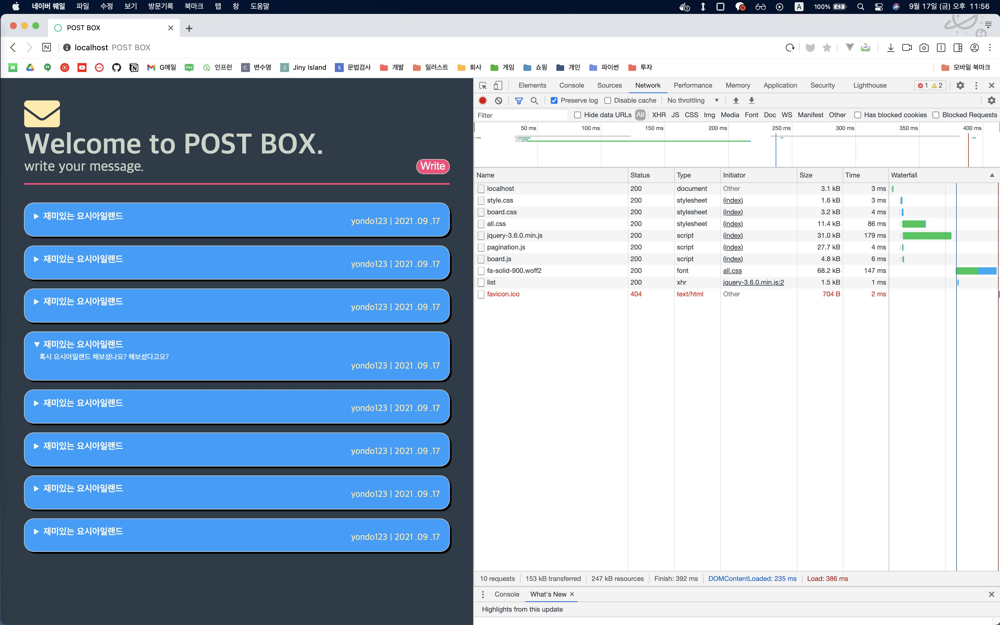

![Featured image of post [Node.js] HTTP모듈 실습](../../assets/thumb/nodejs.png)
Node.js HTTP 모듈을 통해 간단히 요청보내고, 주고받는 초간단 API 서버를 만들어보았다.
Request
createServer 콜백에서 request, response 인자를 받는데 request 객체에서 요청 정보들을 받을 수 있다.
const http = require('http');
http.createServer(async (request, response) => {
try {
const method = request.method;
const url = request.url;
//step 1. 요청 메소드 구분
if (method == 'GET') {
//step 2. URL 구분
if (url == '/') {
} else if (url == '/list') {
}
} else if (method == 'POST') {
//code..
} else if (method == 'DELETE') {
}
} catch {
//step 3. 예외처리 (404, 500..)
}
}).listen(8080);
- Method : request.method
- url : request.url
script 및 css
부끄럽게도 나는 html 파일에서 스크립트와 css경로만 적어주면 알아서 갖고오겠지?? 라고 안일하게 생각했다.
계속 못받아오길래 직접 로그로 띄워본 결과(아래 참고).. css, html 파일도 계속 request를 하는데 파일이 없으니 404 응답을 해주고있었다. (생각해보니 스프링에서도 context 경로 일일이 설정했다..😅)
../frontend/resources/css/style.css
../frontend/resources/css/board.css
[👻 LOGGER][method : GET, url : /resources/js/pagination.js]
[👻 LOGGER][method : GET, url : /resources/js/board.js]
../frontend/resources/js/pagination.js
../frontend/resources/js/board.js
[👻 LOGGER][method : GET, url : /list]
[👻 LOGGER][method : GET, url : /favicon.ico]
모든 리소스를 정적으로 일일이 구성하기에는 관리도 어렵고 부담스럽다.. url 경로를 동적으로 받아오면 된다!
try {
const resource = await fs.readFile(`../frontend${url}`);
console.log(`../frontend${url}`);
return response.end(resource);
} catch (error) {
const notFoundView = await fs.readFile('../frontend/html/notFound.html').catch((err) => {
return store.logger('error', err);
});
response.writeHead(404, { 'content-Type': 'text/html; charset=utf-8' });
return response.end(notFoundView);
}
Response
이제 반대로 응답을 내려줄려면 response 객체를 활용하면된다.
writeHead메서드로 상태코드와 HTTP ContentType을 명시해주면되고 추가적으로 인코딩을 위해 charset도 정의해주면 좋다. (UTF-8 권장)
//http 상태코드, http header 정의
response.writeHead(200, { 'Content-Type': 'http header; charset=utf-8' });
//resource 전달 (html..json.. 등등)
response.end(data);
HTML Resource
response.write("") 형태로 직접 작성하면서 전달해줄 수 있지만 코드도 길어지고 비효율적이다.. fs 모듈로 html 파일을 갖고올 수 있다. fs 모듈은 비동기 수행이므로 createServer 콜백을 async로 감싸는 것도 잊지말자.
const mainView = await fs.readFile('../frontend/html/board.html').catch((err) => {
console.error(err);
});
response.writeHead(200, { 'Content-Type': 'http header; charset=utf-8' });
response.end(mainView);
JSON Resource
restAPI 통신시 JSON 포맷 데이터를 애용하게되는데, node에서는 손 쉽게 객체로 내려줄 수 있다. (역시 JSON 다루는 것은 node.js가 편하다..)
content-type을 JSON 형태로 맞추고 객체를 String객체로 변환시켜서 응답해주면 된다.
const list = {
result: true,
data: {
items: store.boardlist
}
};
response.writeHead(200, { 'content-Type': 'Application/json; charset=utf-8' });
return response.end(JSON.stringify(list));
후기

이렇게 해서 간단한 서버를 만들어보았는데 확실히 구축 속도가 빠르긴하다.. 단 몇줄만으로 손쉽게 서버를 만들 수 있으니..
*위 내용은 공부한 내용을 축약해서 정리해보았는데 혹여나 전체 소스가 필요한 분들을 위해 아래에 정리해보았습니다.(서버소스만..)
파일 구조
├── frontend
│ ├── html
│ │ ├── board.html
│ │ ├── notFound.html
│ │ └── serverError.html
│ └── resources
│ ├── css
│ │ ├── board.css
│ │ └── style.css
│ └── js
│ ├── board.js
│ └── pagination.js
└── server
├── restApi.js
└── store.js
store.js
const store = {
boardlist: [
{
title: '재미있는 요시아일랜드',
context: '혹시 요시아일랜드 해보셨나요? 해보셨다고요?',
writer: 'yondo123',
writeDate: '2021-09-17'
},
{
title: '재미있는 요시아일랜드',
context: '혹시 요시아일랜드 해보셨나요? 해보셨다고요?',
writer: 'yondo123',
writeDate: '2021-09-17'
},
{
title: '재미있는 요시아일랜드',
context: '혹시 요시아일랜드 해보셨나요? 해보셨다고요?',
writer: 'yondo123',
writeDate: '2021-09-17'
},
{
title: '재미있는 요시아일랜드',
context: '혹시 요시아일랜드 해보셨나요? 해보셨다고요?',
writer: 'yondo123',
writeDate: '2021-09-17'
},
{
title: '재미있는 요시아일랜드',
context: '혹시 요시아일랜드 해보셨나요? 해보셨다고요?',
writer: 'yondo123',
writeDate: '2021-09-17'
},
{
title: '재미있는 요시아일랜드',
context: '혹시 요시아일랜드 해보셨나요? 해보셨다고요?',
writer: 'yondo123',
writeDate: '2021-09-17'
},
{
title: '재미있는 요시아일랜드',
context: '혹시 요시아일랜드 해보셨나요? 해보셨다고요?',
writer: 'yondo123',
writeDate: '2021-09-17'
},
{
title: '재미있는 요시아일랜드',
context: '혹시 요시아일랜드 해보셨나요? 해보셨다고요?',
writer: 'yondo123',
writeDate: '2021-09-17'
}
],
logger: function (type, message) {
switch (type) {
case 'log':
console.log('[👻 LOGGER]' + message);
break;
case 'error':
console.log('[⛔️ ERROR]' + message);
break;
case 'warn':
console.log('[🚸 WARN]' + message);
break;
default:
console.error('[LOGGER] 지원하지 않는 타입');
break;
}
}
};
module.exports = store;
server.js
const http = require('http');
const fs = require('fs').promises;
const store = require('./store');
http.createServer(async (request, response) => {
try {
const method = request.method;
const url = request.url;
store.logger('log', `[method : ${method}, url : ${url}]`);
//GET Method
if (method === 'GET') {
if (url === '/') {
const mainView = await fs.readFile('../frontend/html/board.html').catch((err) => {
return store.logger('error', err);
});
response.writeHead(200, { 'content-Type': 'text/html; charset=utf-8' });
return response.end(mainView);
} else if (url == '/list') {
const list = {
result: true,
data: {
items: store.boardlist
}
};
response.writeHead(200, { 'content-Type': 'Application/json; charset=utf-8' });
return response.end(JSON.stringify(list));
}
try {
const view = await fs.readFile(`../frontend${url}`);
console.log(`../frontend${url}`);
return response.end(view);
} catch (error) {
const notFoundView = await fs.readFile('../frontend/html/notFound.html').catch((err) => {
return store.logger('error', err);
});
response.writeHead(404, { 'content-Type': 'text/html; charset=utf-8' });
return response.end(notFoundView);
}
}
//main
} catch (error) {
store.logger('error', error);
}
}).listen(8080, () => {
store.logger('log', 'POST BOX START!!!!!');
});
참고자료
- Node.js 교과서 - http 모듈로 서버 만들기 (조현영 저)
- geeksforgeeks - HTTP Content-Type